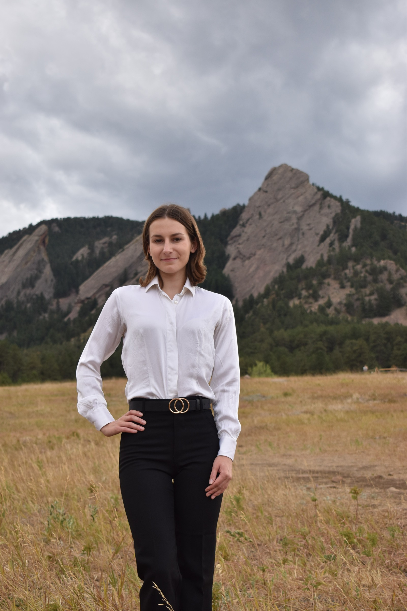
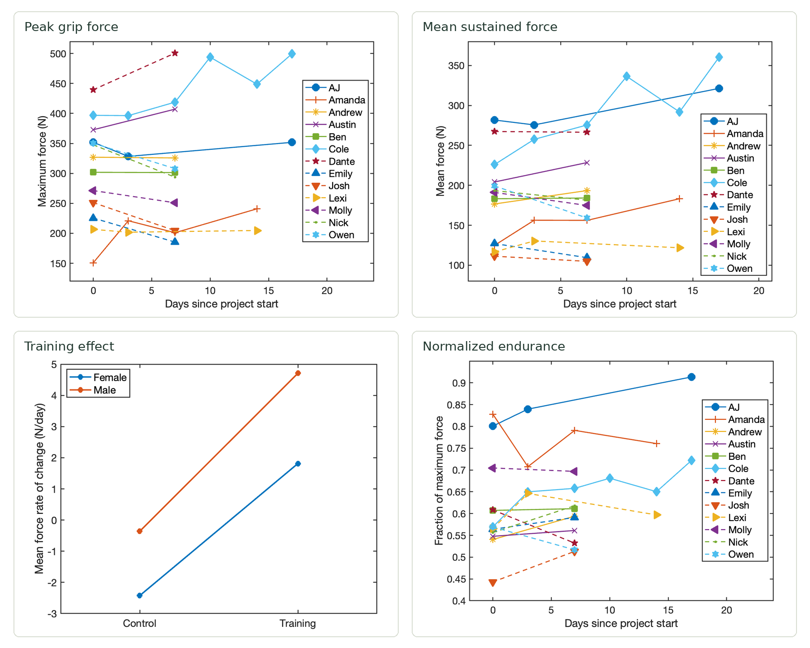
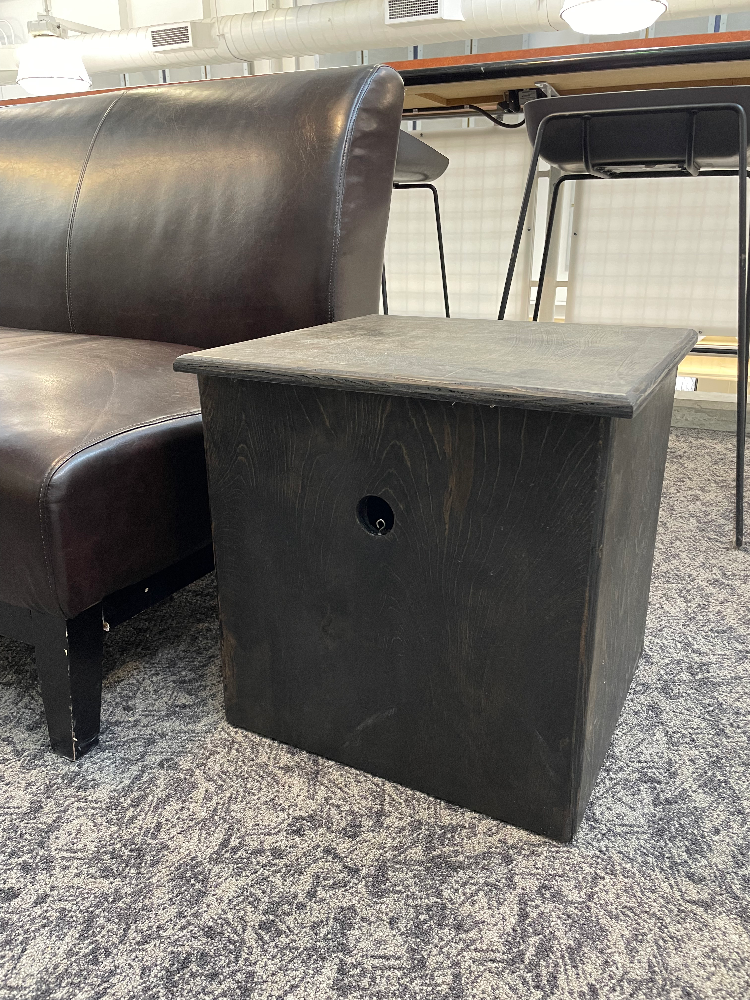
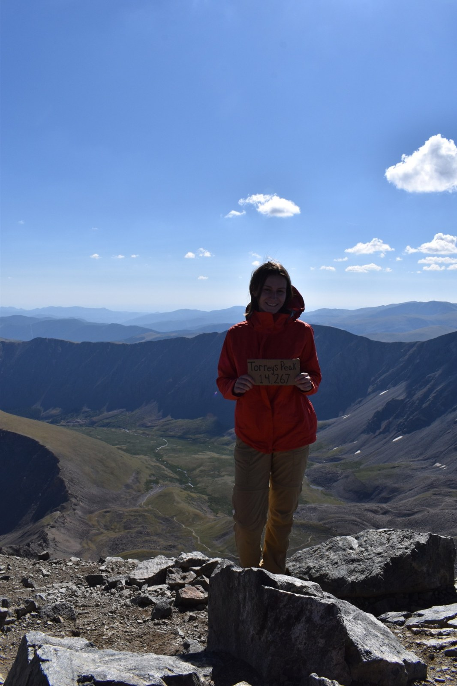
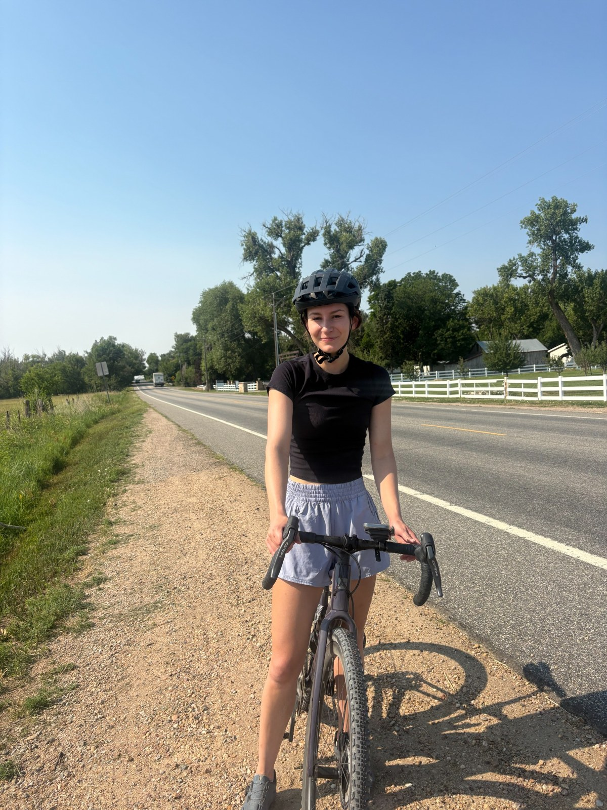
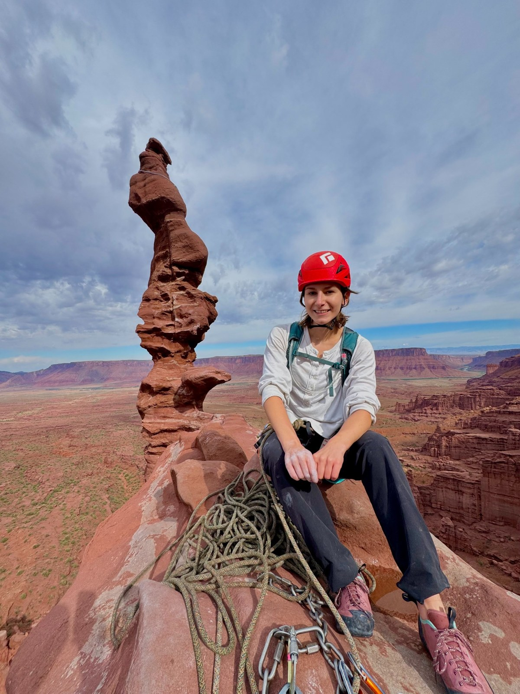
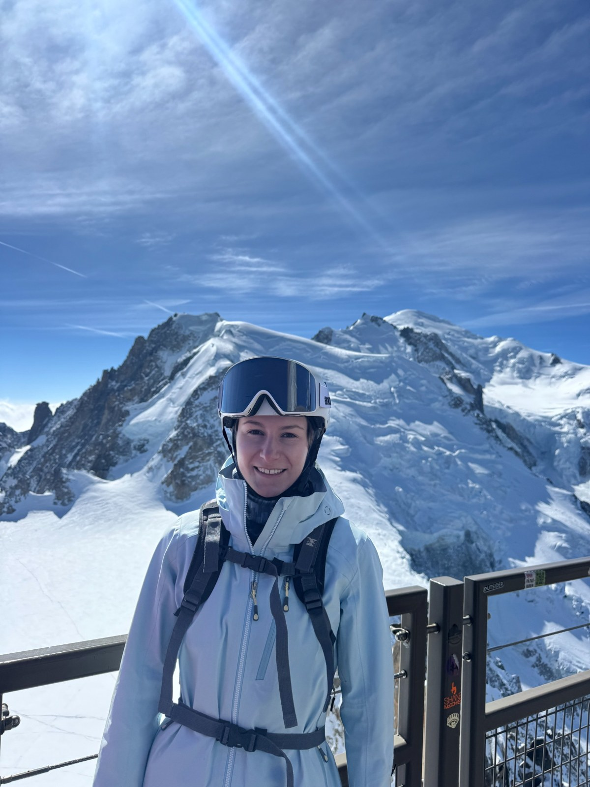
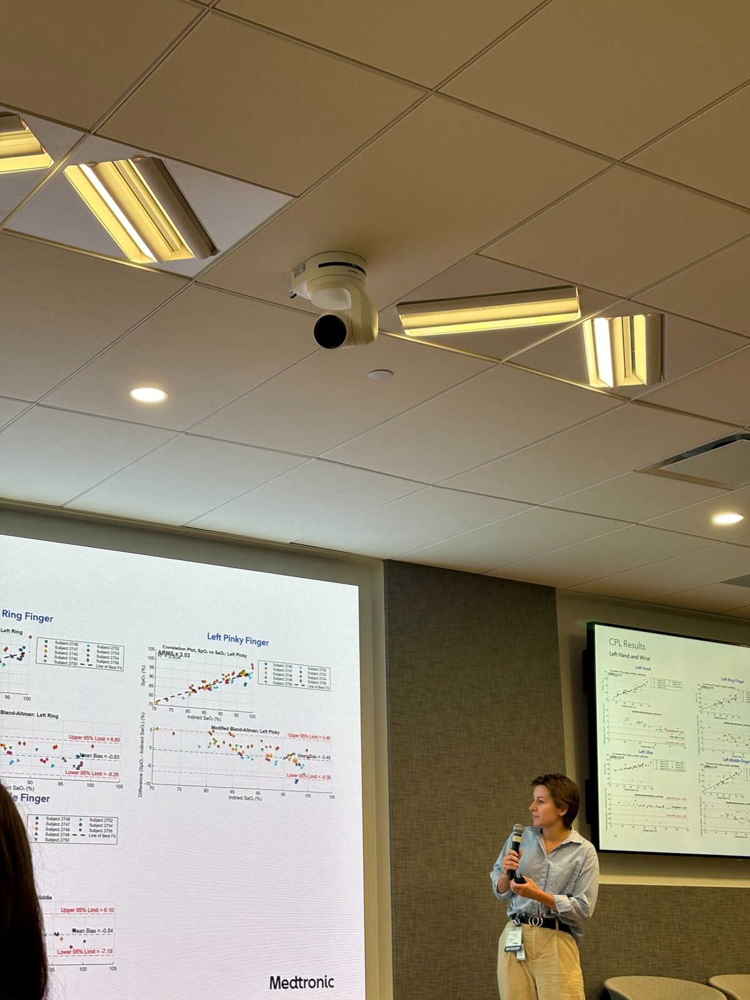

CAD design · Structural analysis · Project leadership01 ↗
Drill-Powered Tricycle
From a complete SOLIDWORKS assembly to beam calculations and manufacturing drawings: designing a vehicle for an endurance challenge.
View project ↗I’m Amanda — a mechanical engineering student and outdoor enthusiast. I’m drawn to the place where thoughtful engineering makes a difference in people’s lives.

Mechanical design, robotics, and experimental analysis — projects that connect engineering calculations with building and testing.
From a complete SOLIDWORKS assembly to beam calculations and manufacturing drawings: designing a vehicle for an endurance challenge.
View project ↗Starting from a rudimentary knee design, I led the mechanical redesign and controls development and created the open-source educational platform myself, including the website, assembly instructions, and teaching resources.
View project ↗
Measured grip force with a Vernier dynamometer and LabQuest Mini DAQ. The team processed 60-second trials in MATLAB, extracted peak force, 55-second mean force, and normalized endurance metrics, and compared training effects using two-factor ANOVA and 95% confidence intervals.
View project ↗
A hands-on exploration of actuation and mechanical advantage through an automated tug-of-war prototype for dogs.
View project ↗SOLIDWORKS (CSWA, 300+ hours), Onshape, complete assemblies, engineering drawings, manufacturing reviews, FEA, and beam-loading hand calculations.
MATLAB (300+ hours), LabVIEW, Arduino, C++, and Python. Experience with experimental data, statistical analysis, test protocols, and PID control.
Five years of 3D printing and laser cutting experience, Artec 3D scanning, and hands-on lathe and mill work. Helping students turn designs into working parts.
I’m completing my B.S. in Mechanical Engineering with a Physics minor at the University of Colorado Boulder. My experience in prosthetics, sensor development, and mechanical design has shaped my interest in wearable technology. I’m interested in devices that people use in everyday life, from health and performance monitoring to outdoor applications, and in the mechanical design, sensing, and testing that make them work well.
Reading about quantum technology sparked a second curiosity and inspired me to pursue my physics minor. I’m excited by opportunities to bring mechanical design and physical intuition to emerging technologies.
Teaching and service are equally important to me. Whether I’m helping a student troubleshoot a design, tutoring middle school students, or volunteering with Eldora ski patrol, I value sharing what I know and giving back to my community.
Connect on LinkedIn ↗Research & Development Intern
Neonatal regional oximetry sensor development, prototype configurations and fixtures, Instron flexibility testing, optical performance evaluation, and MATLAB analysis. Developed a clinical study protocol and documented study results.
Engineering Support Staff · CU Boulder
Teach fabrication and electronics workshops, support student projects, and maintain a fleet of 20 Prusa printers and 5 laser engravers.
CU Boulder
Support thermodynamics, statics and solids, component design, and data analysis. Assist 600+ students and contribute to critical design reviews.
Treasurer · CU Boulder
As part of the board, I help organize town halls and events that gather student feedback for the department and create a channel of communication between students and faculty. We also run community-building events to strengthen connections among mechanical engineering students.
Engineering Intern · University of Utah
Redesigned and built a powered knee prosthesis, developed controls, and created open-source assembly and teaching resources.
Skiing, climbing, and cycling keep me outside. Reading, travel, and woodworking with my dad keep me curious.
Volunteering with Eldora Mountain Ski Patrol connects my love of the mountains with my commitment to service. I also served as a volunteer middle school tutor for three years, from 2022 to 2025.
Study abroad · Spring 2025
I studied abroad with Semester at Sea in Spring 2025, living and learning aboard a ship as we traveled through Asia, Africa, and Europe. The 106-day voyage ran from January 5 to April 20, beginning in Thailand and ending in Germany, with an itinerary spanning 10 countries.
One of my most meaningful experiences was visiting the engineering school at the University of Ghana and connecting with students there. Meeting fellow engineering students was a highlight of the voyage and gave me a personal connection to the places we visited.
Spring 2025 voyage itinerary ↗Voyage route





Interested in engineering, collaboration, or exchanging ideas? I’d love to connect.